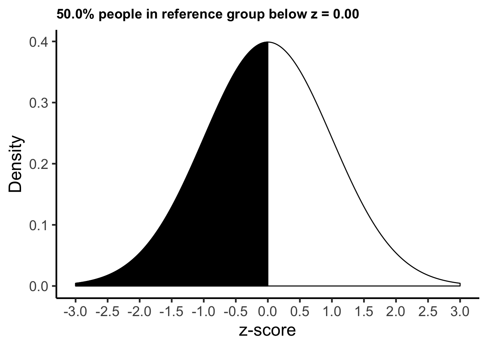
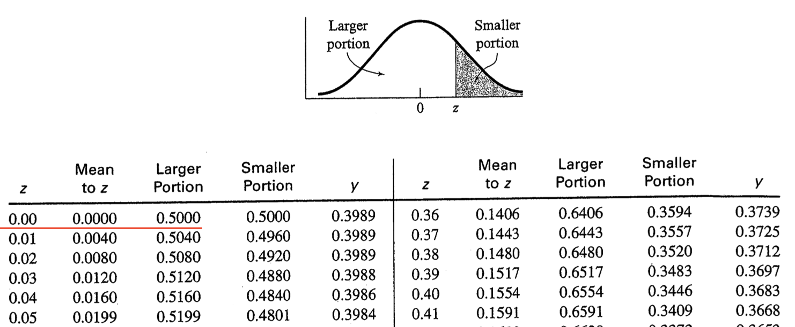

Chapter 5 A single case
If we assume our frame of reference has a normal distribution, we can calculate for each person the proportion of people who scored lower than them. For example, imagine a person has a z-score of 0 relative to some reference group. If the distribution is normal, we can determine the proportion of people, in the reference group, that haver scores lower than 0 using the command below:
pnorm(0)## [1] 0.5We see that 50% of people, in the reference group, have a z-score lower than zero. We can see this graphically below.

Of course, the pnorm(0) command is the same as looking up a value of zero in a z-table – as illustrated below. Examine the first row that is underlined in red. Notice the value of 0 in the z column (indicating a z-score of zero). Then examine the “Larger portion” column and notice the .50 value. This .50 indicates the proportion of the distribution is below a z-score of zero (i.e., .50 or 50%). As noted, examining the table in this way is the same as running pnorm(0) command.

male_height_data %>%
select(-part_id, -sex, -T_data, -inch_height) %>%
arrange(cm_height) %>%
as.data.frame()## name cm_height z_data z_data_males z_canada_male
## 1 Steve 165 -1.03580206 -2.08905154 -2.9305556
## 2 Jim 168 -0.66141577 -1.63159500 -2.5138889
## 3 Jamal 172 -0.16223406 -1.02165294 -1.9583333
## 4 Tim 173 -0.03743863 -0.86916743 -1.8194444
## 5 Eli 174 0.08735680 -0.71668192 -1.6805556
## 6 Sean 179 0.71133395 0.04574565 -0.9861111
## 7 Matt 180 0.83612937 0.19823117 -0.8472222
## 8 Rick 183 1.21051566 0.65568771 -0.4305556
## 9 Basheer 185 1.46010652 0.96065874 -0.1527778
## 10 John 190 2.08408367 1.72308631 0.5416667